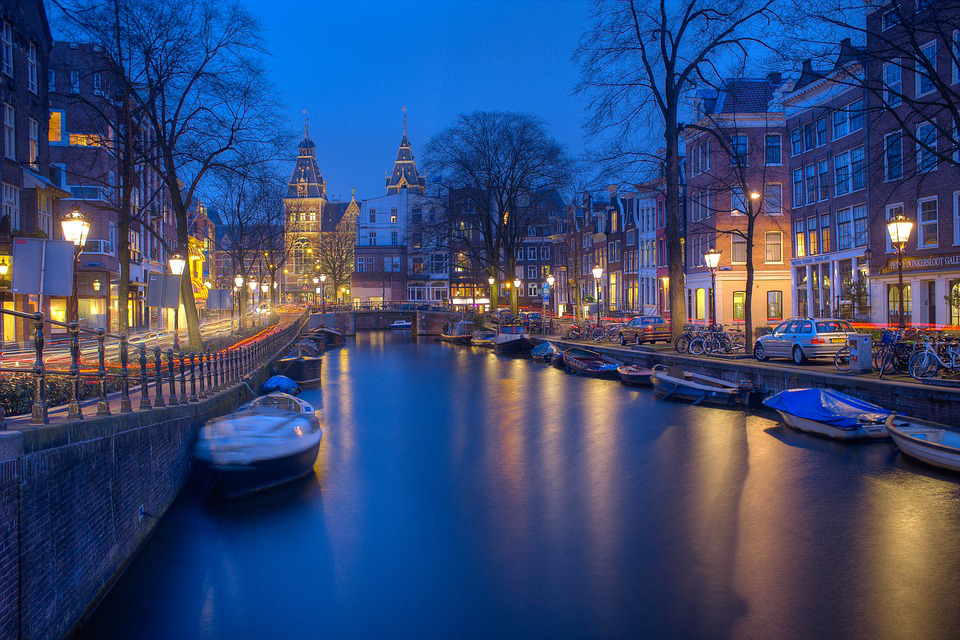
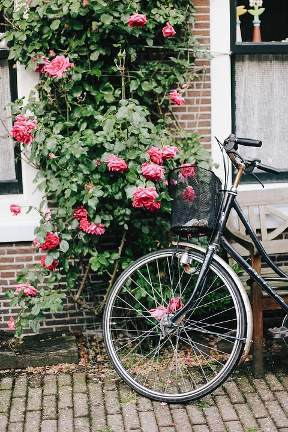

Amsterdam is de hoofdstad and de meest volkrijke stad in heel Nederland. Amsterdam bevindt zich in de provincie Noord Holland. As the commercial capital of the Netherlands and one of the top financial centres in Europe, Amsterdam is considered an alpha-world
city. Amsterdam is one of the most popular tourist destinations in Europe, receiving more than 4.63 million international visitors annually, this is excluding the 16 million day-trippers visiting the city every year. Two-thirds of
the hotels are located in the city's centre. De Wallen, also known as Walletjes or Rosse Buurt, is a designated area for legalised prostitution and is Amsterdam's largest and most well known red-light district. This neighbourhood has
become a famous attraction for tourists. It consists of a network of roads and alleys containing several hundred small, one-room apartments rented by sex workers who offer their services from behind a window or glass door, typically
illuminated with red lights.


Bos & Lommer
Amsterdam heeft geen introductie nodig. Iedereen heeft er wel eens van gehoord en ze weten ook waar het beroemd om is. Zo kan je door de grachten varen, museums bezoeken,
coffeeshops binnentreden. Maar er is nog meer dan alleen al deze geweldige dingen. Eenmaal verder uit centraal kan je amsterdam pas echt verkennen.
Dan kom je in Amsterdam West, een sfeervolle buurt met een multiculturele samenleving, cultuur en een geweldige geschiedenis.
Bos en Lommer is de centrum van deze buurt. Daar kan je die multiculturele samenleving in nederland daadwerkelijk bewonderen. Je kan er zowel Turkse en Marrokkaanse cafe's vinden
en kleine supermarkten die fruit verkopen. Er is bijna dageljks een markt aanwezig, waar een hele menigte op afkomt. Naast de markt is er een ijswinkel te vinden en een hele beroemde
vrouwenwinkel genaamd Manzaram. Verder is er een mogelijkheid om rustig een terrasje te pakken en te genieten van het zomerse weer, wanneer het zomer is uiteraard.
Ook is er plaats om te gaan fitnessen, om jezelf op conditie te houden. En wanneer dit allemaal niet genoeg is, is er als je even verder loopt het Erasmuspark.
Daar kan je een heerlijke wandeling maken en genieten van alle rust om je heen. Bos en Lommer staat vooral bekend om de Vespuccistraat, ook wel de de mooiste straat van Amsterdam genoemd.
Je zal de Jeruzalem kerk tegenkomen. Dat is een hele mooie voorbeeld van een van de Amsterdamse scholen, met de vorm van pure kunst.
Voor een kalme avond kan je rustig een terassje pakken en genieten van het eten. en als je van wijn houdt, een winkel genaamd Partisan hebben een uitstekende selectie uit verschillende smaken.
Ze hebben ook heerlijke maaltijden. als je trek hebt in een lekkere burgere of een bier. Vergeet dan vooral niet de jan evertsenstraat te bezoeken.
Ze hebben een gemiddelde prijs en zijn zeker niet de duurste. Als je hebt uitgerust in een saaie hotel. moet je zeker niet vergeten om te slapen in een tramcabine.
Of achter een boekenkast. In hotel not hotel kan je terecht voor al deze dingen. Misschien moet je overwegen om te veranderen van hotel.Naast de waanzinnige slaapplekken
hebben ze ook kwalitatieve eten en geweldige cocktails.
Sport
Jiu Jitsu is een zeer effectieve gevechtsstijl, gebaseerd op het gebruik van techniek boven kracht. Jiu Jitsu is vooral gebaseerd op de grond. Photo by Samuel Castro on Unsplash
JOVO is een echte Amsterdamse tafeltennisvereniging die al bestaat sinds 1949. Photo by Frederick Tubiermont on Unsplash
Badminton is een leuke en uitdagende sport dat door alle leeftijden wordt gespeeld. Een goede manier om te bewegen en aan je conditie te werken op je eigen niveau. Photo by 炫铭 on Unsplash
VVA/Spartaan is 1 juli 1988 ontstaan door de fusie van twee Amsterdamse voetbalverenigingen VVA en De Spartaan. Photo by Jannik Skorna on Unsplash
Ettaki Gym is ontstaan uit passie voor de vecht- en verdedigingssport. Photo by Wade Austin Ellis on Unsplash
DOS Amsterdam is een van de meest ervaren gym- en turnverenigingen van Amsterdam. Photo by Daoud Abismail on Unsplash
DOS Amsterdam is een van de meest ervaren gym- en turnverenigingen van Amsterdam. Photo by Tobias Nii Kwatei Quartey on Unsplash
Karate is een complete sport waarbij je veel geeft en veel incasseert en het beoefenen ervan geeft dan ook veel voldoening. Photo by Thao Le Hoang on Unsplash
Het zwembad van SportPlaza Mercator bestaat uit een wedstrijdbad, een doelgroepenbad en een therapeutisch zwembad. Photo by Serena Repice Lentini on Unsplash
Sportschool Fitness4me heeft een enorm assortiment aan professionele cardio- en fitnessapparatuur. Photo by Damir Spanic on Unsplash
Om verder te gaan moet u onze cookiesvoorwaarden accepteren. Wij gebruiken onze cookies uitsluitend voor het optimaliseren van onze website.
en zullen verder niets met u gegevens doen.